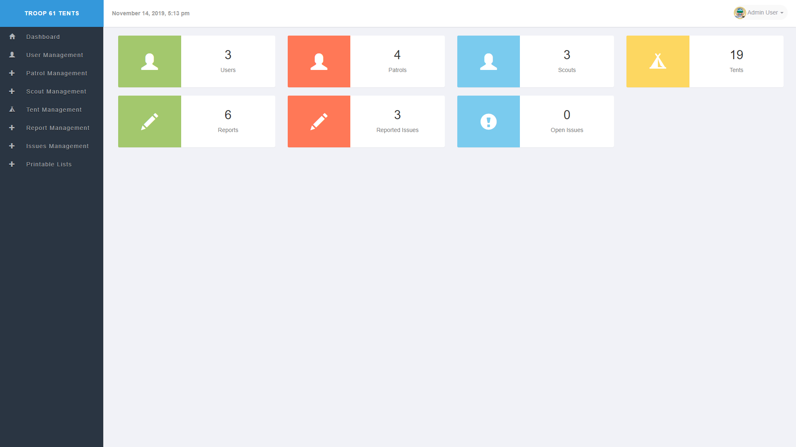
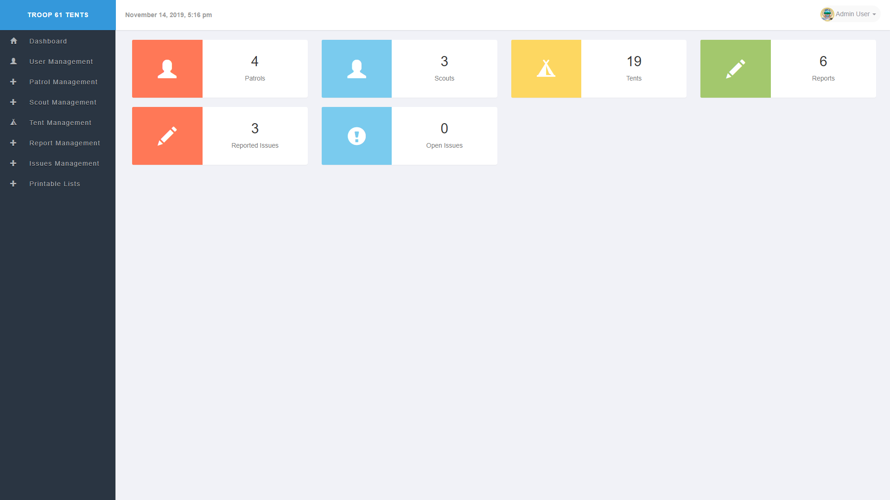
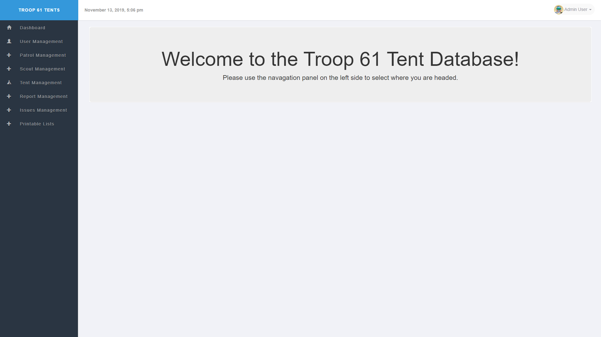

User Homepages
On this page you can find information about the three different types of homepages, based on what type of user you are. Use the table of contents to scroll down to a specific type of homepage.
Admin Homepage
This is the admin homepage. On this page you will find the number of users, number of patrols, number of scouts, number of tents, number of tent reports, number of reported tent issues, and the number of unresolved tent issues. On the left you will find the navigation sidebar, which allows you to navigate through the database website. The top left shows the name of the database, followed by the date and time. The top right is a dropdown that allows you to change your account details and logout.
Quartermaster Homepage
This is the quartermaster homepage. On this page you will find the number of patrols, number of scouts, number of tents, number of tent reports, number of reported tent issues, and the number of unresolved tent issues. On the left you will find the navigation sidebar, which allows you to navigate through the database website. The top left shows the name of the database, followed by the date and time. The top right is a dropdown that allows you to change your account details and logout.
Standard User / Patrol Leader Homepage
This is the standard user / patrol leader homepage. On the left of this page you will find the navigation sidebar, which allows you to navigate through the database website. The top left shows the name of the database, followed by the date and time. The top right is a dropdown that allows you to change your account details and logout.